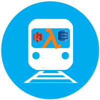

{{ currenttime }}
SEPTAVue
My Station
{{ station.stop_name }}
Stations to Display(multiple)
{{ station.stop_name }}
Direction
Inbound
Outbound
Days
Mon,Tue,Wed,Thur,Fri
Fri
Sat
Sun
Mon,Tue,Wed,Thur
Start Time
End Time
{{ direction }}
{{ train.trainnum }}
{{ stopName(stop.stop_id) }} {{ time24to12(stop.departure_time.slice(0,5)) }}
Next Stop: {{ train.nextStop }}
Mins Late: {{ train.late }}